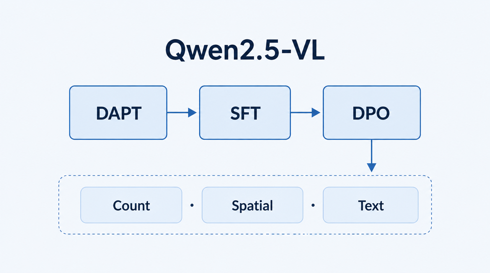

FracLogGPT: A Multimodal Large Language Model for Fracture Interpretation in Imaging Logging
Electronics 15(1), 127, 2026 · 第一作者 · 已发表
面向成像测井裂缝解释，基于 Qwen2.5-VL-7B 组织 DAPT、LoRA SFT 与 DPO 三阶段适配，联合评价裂缝计数、空间一致性与文本描述。负责方法设计、软件实现、实验分析与初稿撰写。
论文报告：独立测试集上的裂缝计数分类 Count-F1 为 0.70。
Paper ↗
DOI ↗
Code ↗
BibTeX
@article{shen2026fracloggpt,
title = {FracLogGPT: A Multimodal Large Language Model for Fracture Interpretation in Imaging Logging},
author = {Shen, Hushuang and Li, Ang and Zhang, Liyan and Liu, Xiangxiang},
journal = {Electronics},
year = {2026},
volume = {15},
number = {1},
pages = {127},
doi = {10.3390/electronics15010127}
}